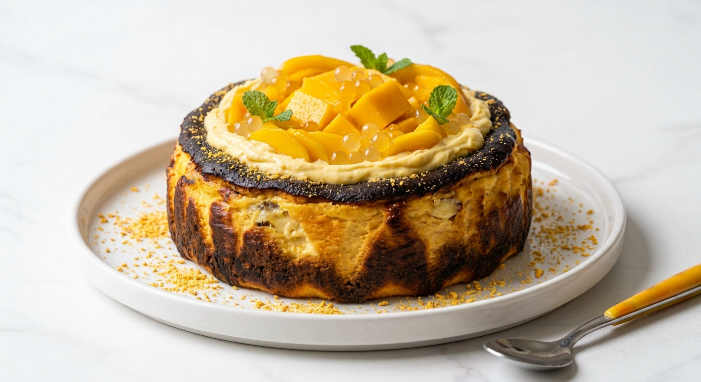
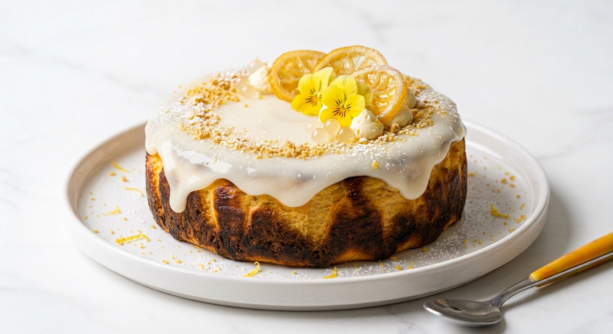
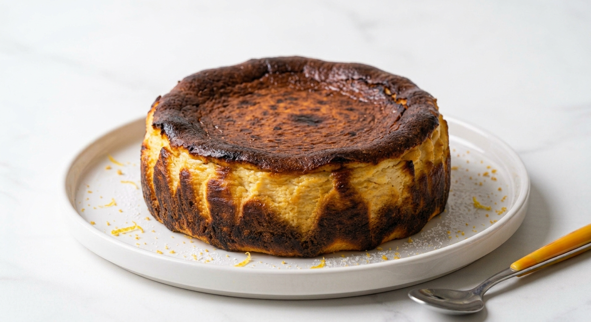

精選熱賣

提拉米蘇巴斯克
濃郁咖啡與馬斯卡彭起司的完美結合！大人系提拉米蘇巴斯克，外皮焦香、內餡綿密，交織出香醇苦甜的成熟風味。
NT$450 ~ NT$880
芒果乳酪巴斯克
夏日限定的幸福滋味！選用新鮮芒果熬煮成果醬，結合濃郁滑順的乳酪，酸甜果香在口中完美融合。
NT$450 ~ NT$880
檸檬老奶奶巴斯克
充滿法式風情的經典滋味。濃郁乳酪中帶有清爽的檸檬清香，上層淋上酸甜糖霜，口感清爽不甜膩。
NT$450 ~ NT$880
原味巴斯克
經典不敗的招牌美味。外層有著迷人的焦香，內餡則是半熟乳酪的濃郁綿密，每一口都是純粹的乳酪香氣。
NT$450 ~ NT$880
藍莓乳酪巴斯克
嚴選飽滿多汁的藍莓，融入細緻滑順的乳酪蛋糕中，咬得到豐富果肉，酸甜交織出豐富層次。
NT$450 ~ NT$880